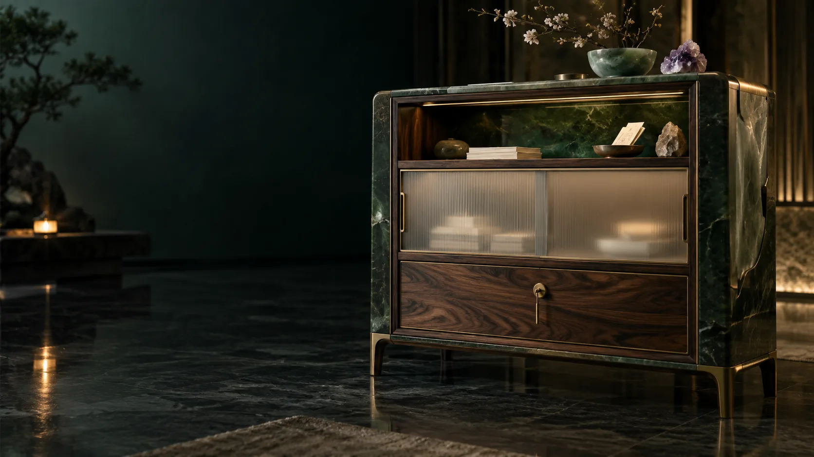

Public
Selected outward expression
Recipient, purpose and release review.
SOVEREIGNTY / PERMISSION AND RELEASE
Three contextual selves organise a personal record. Interpretation, training, action and publication each need a scope that the person understands.
The source architecture places session media and time series in the internal personal record. Calling a view “public self” does not automatically publish it. An outward release identifies exactly the fields, media or model context intended for a particular audience.
A permission records data, recipient, purpose, operation, duration and version. Reading a record, deriving features, training a model, calling a tool and publishing an excerpt are different operations. Secret material has explicit interpretation and training grants.
A transcript, summary, embedding, adapter or model weight may carry sensitive information. The proposed runtime and release service enforce source restrictions, test for leakage and track downstream consequences when a source is corrected.
Keys, stored objects and delegated roles have distinct recovery arrangements. Backups preserve records, links and permissions. Rehearsed export and restoration demonstrate usable continuity through device loss, service migration or material repair.
L0 describes the person’s controlled environment; L1 chosen local cooperation; L2 regional collaboration; L3 wider commons. A computer’s location does not decide an audience or permission. The job agreement identifies its actual operator, retained inputs and allowed use.
Selected outward expression
Recipient, purpose and release review.Personal context and chosen relationships
Function, data scope and permission history.Finer interpretation and training grants
Explicit access, expiry and recovery.